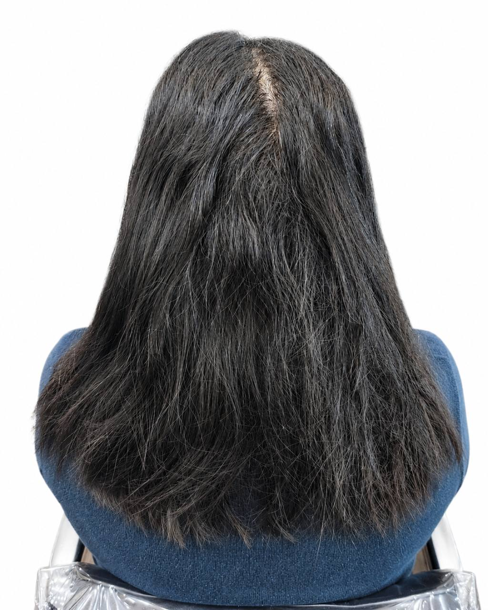
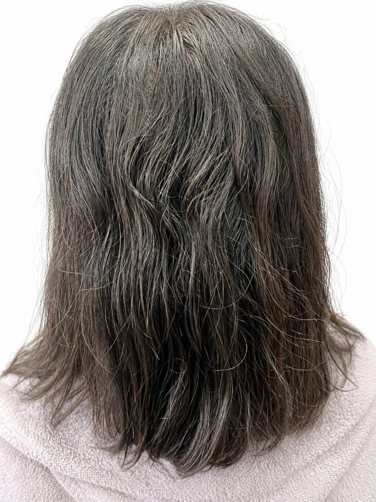
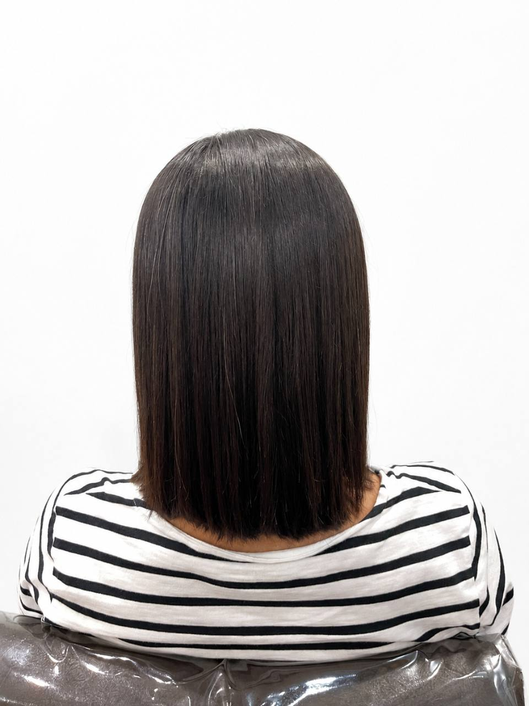
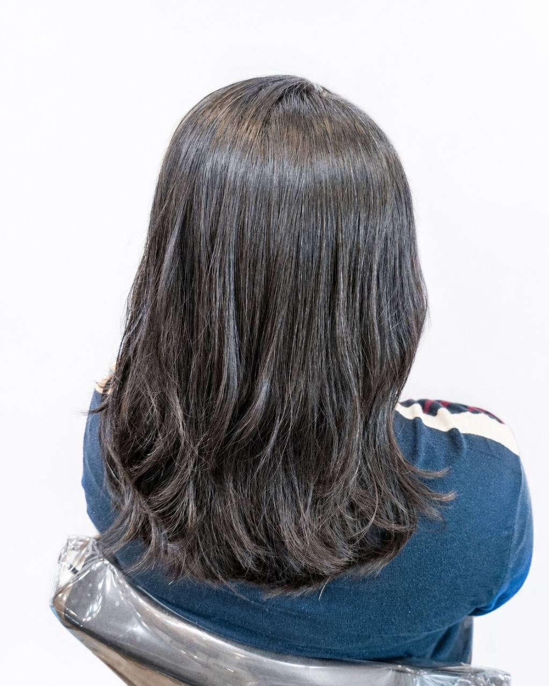
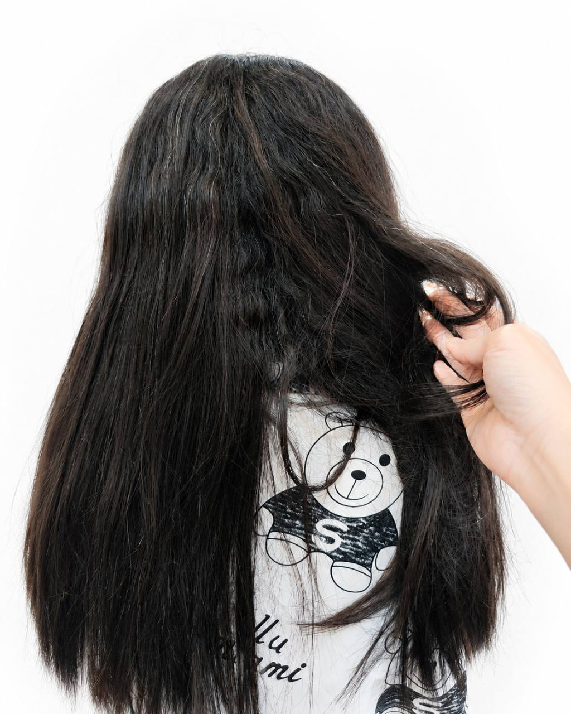
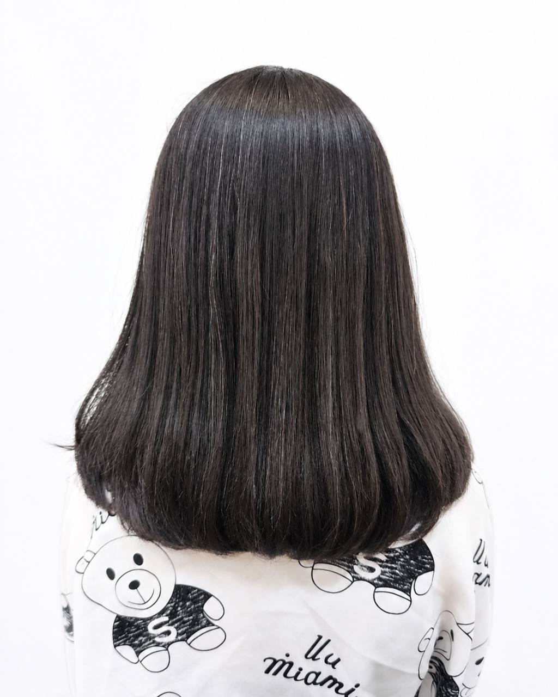
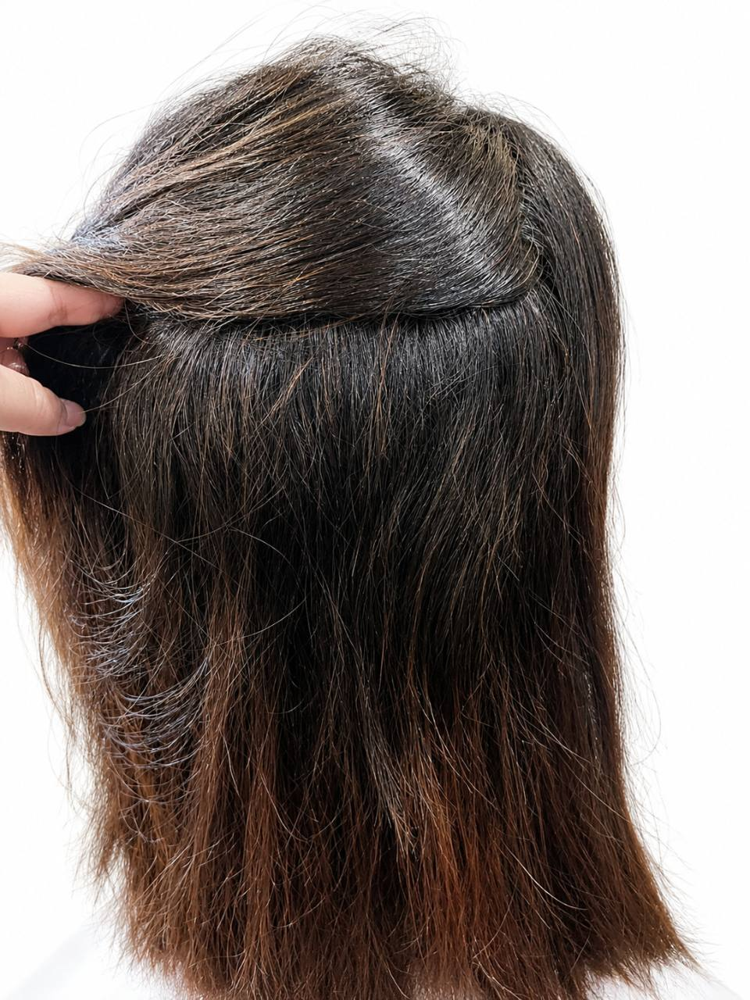
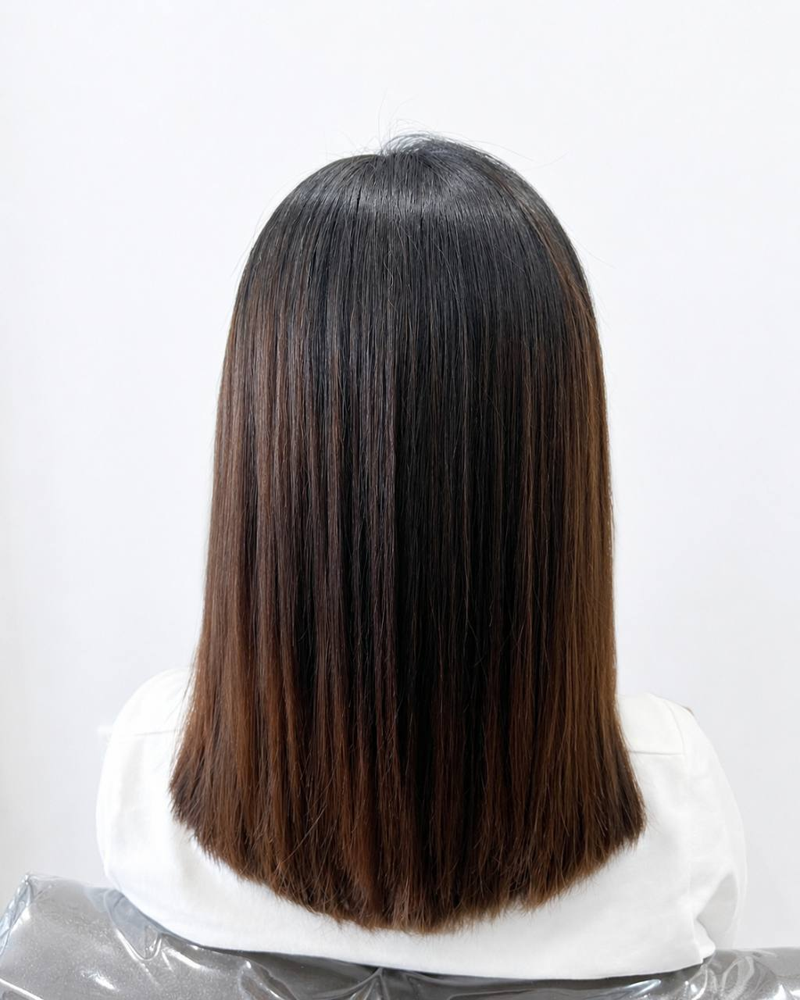

自然捲與毛躁出現的位置
觀察髮根、髮中與髮尾的差異，確認你在意的是蓬度、髮面凌亂，還是每天吹整的時間。
Nankan Hair Straightening
縮毛矯正不只是把頭髮拉直。自然捲的位置、髮絲粗細、髮量、過去是否染燙，以及你希望保留多少髮尾輪廓，都會影響適合的規劃。
本頁案例均為 ALICE 實際服務後的原始紀錄；未以 AI 改變髮色、髮況或完成效果。
完成照拍攝前未再使用離子夾或電棒額外造型。

Hair Assessment
每次服務都從真實起點開始。評估後可能調整範圍、保留髮尾輪廓，或建議更保守的安排。
觀察髮根、髮中與髮尾的差異，確認你在意的是蓬度、髮面凌亂，還是每天吹整的時間。
先說明曾做過的縮毛、離子燙、染髮、漂髮或居家染，讓不同髮段能被分開評估。
有人想縮短整理時間，有人希望髮尾保留自然彎度；完成方向會依日常習慣一起規劃。
Real Straightening Cases
照片與文字僅呈現該位顧客當次的髮況、需求與完成方向，不代表每個人都能得到相同結果。實際服務仍需依現場評估調整。
CASE 01｜IRIS2
顧客希望全頭看起來更直順，並縮短每天整理頭髮的時間；完成方向保留自然感，而不是僵硬貼直的線條。

中等髮質、髮量中等，帶有中度自然捲；為第一次縮毛矯正，無染髮史。
全頭縮毛矯正搭配洗剪與護髮，以直順、方便日常整理為主要目標。
髮面看起來較集中、線條較直順；仍保留自然的整體輪廓。
CASE 02｜JAY2
顧客在意自然捲帶來的毛躁與凌亂感，希望以直順為主，但不希望髮尾呈現過度筆直的效果。


粗硬髮、髮量中等、自然捲明顯；約六個月前做過縮毛，無染髮史。
全頭縮毛矯正搭配洗剪與護髮，讓整體朝直順方向整理，同時保留髮尾自然彎度與輪廓。
髮面與整體線條看起來更集中，日常整理時可減少自然捲造成的凌亂感。
CASE 03｜JAY1
顧客的髮絲粗硬、髮量較多、自然捲明顯；本組 Before 為掀開表層後的內層髮況檢查，不是完整背面 Before。


粗硬髮、髮量多、自然捲嚴重；約六個月前做過縮毛，無染髮史。
全頭縮毛矯正搭配洗剪與護髮，從內層與表層的差異一起評估可施作範圍。
整體蓬度與髮面凌亂感看起來較收斂，讓日常整理更容易掌握。
CASE 04｜IRIS1
本組 Before 為內層髮況檢查；顧客主要在意毛躁與髮面不一致，服務會依實際髮況評估。


中等偏細髮、髮量中等、輕度自然捲；約十個月前做過縮毛，也約十個月前做過一般染髮。
全頭縮毛矯正搭配洗剪與護髮，先評估既有縮毛與染髮紀錄，再以毛躁與髮面整齊度為主要溝通方向。
完成後髮面看起來更整齊，毛躁感在視覺上較不明顯；實際狀態仍會受個人髮況與日常整理影響。
Before Booking
資料越完整，越能在預約前初步判斷需要的時間與溝通方向；最終仍以到店髮況評估為準。
可提供自然光下的正面、側面、背面與髮尾近照；若在意內層自然捲，也可以一併拍攝。
請說明最後一次縮毛、離子燙、染髮、漂髮、挑染、居家染或黑染的大約時間。
可告訴我們是否在意太貼、太直、髮尾輪廓或每天整理時間，也可提供參考照片作為溝通方向。
Price & Time
一般縮毛矯正價格請以服務項目頁為準；髮長、髮量、既有染燙與可施作範圍，都會影響最終服務安排。
FAQ
先了解可能影響評估的條件，到店時能更有效率地討論方向與限制。
需要先分辨毛躁出現的位置、自然捲程度、髮絲承受度與過去服務紀錄。有些情況適合全頭規劃，有些則需要調整範圍或方向。
不一定。規劃時會一起確認你希望的直順程度、髮量與髮尾輪廓；完成效果不以僵硬貼直作為唯一目標。
可以先評估，但須告知上次服務時間與目前髮況。新生髮、既有施作區與較脆弱的髮段可能需要分開判斷。
需要先確認染燙歷史、髮絲彈性與可施作範圍。漂後髮況的判斷可先參考 漂後髮況評估說明，實際仍以現場評估為準。
可以先提出需求，但是否適合局部處理，仍需看自然捲位置、髮流、髮況與想保留的輪廓。
完成照拍攝前未再使用離子夾或電棒額外造型。
沒有。本頁案例皆為 ALICE 實際服務紀錄；照片不以 AI 改變真實髮色、髮況或完成效果。
縮毛後仍建議依設計師說明吹乾與整理。日常效果會受到髮況、濕度與個人整理方式影響，案例照片是該次完成方向的紀錄。
本頁四組案例約為 3.5 至 4 小時。價格請參考 縮毛矯正參考價目；實際服務內容與時間會依髮長、髮量與髮況評估。
Related Services